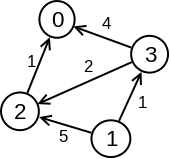

Dajkstrin algoritam
-
Težinski grafovi
Kada svakoj grani grafa pridružimo neki broj koji predstavlja njenu "cenu" (na primer, dužinu puta ili vreme potrebno za prelazak), dobijamo težinski graf. Takav graf se najčešće čuva ili matricom susedstva u kojoj se, umesto logičke vrednosti, u polju (i, j) čuva težina grane između čvorova i i j, ili listom susedstva u kojoj se pored indeksa suseda čuva i težina grane koja do njega vodi.

Primer težinskog grafa -
Šta rešava Dajkstrin algoritam
Dajkstrin algoritam služi za pronalaženje najkraćih puteva od jednog izabranog (početnog) čvora do svih ostalih čvorova u težinskom grafu, pod uslovom da nijedna grana nema negativnu težinu. Ako nas zanima najkraći put samo između dva konkretna čvora, algoritam se jednostavno prekine čim se do ciljnog čvora stigne.
-
Osnovna ideja
Algoritam gradi rešenje postepeno: u svakom koraku "zaključava" jedan čvor za koji je sigurno da je pronađeno njegovo najkraće rastojanje od početnog čvora, i taj čvor dodaje u skup već obrađenih čvorova. Na početku je poznato samo da je rastojanje od početnog čvora do samog sebe jednako nuli, dok su sva ostala rastojanja privremeno postavljena na beskonačno.
U svakom narednom koraku bira se neobrađeni čvor sa trenutno najmanjom procenjenom udaljenošću od početnog čvora - za taj čvor se pokazuje da mu je ta procena zapravo i konačna, najkraća moguća vrednost. Nakon što se taj čvor doda u skup obrađenih, proveravaju se svi njegovi susedi: ako je put do nekog suseda preko upravo dodatog čvora kraći od dotadašnje procene, ta procena se ažurira (ovaj korak se naziva relaksacija grane). Postupak se ponavlja sve dok se ne obrade svi čvorovi (ili dok se ne dođe do traženog ciljnog čvora).
Za efikasnu implementaciju ovog postupka obično se koristi red sa prioritetom (heap), iz kog se u svakom koraku vadi neobrađeni čvor sa najmanjom trenutnom procenom rastojanja, čime se izbegava linearno pretraživanje niza u svakom koraku.
-
Pseudokod
- Rastojanje do početnog čvora postaviti na 0, a do svih ostalih na beskonačno.
- Sve čvorove staviti u red sa prioritetom, uređen po trenutnoj proceni rastojanja.
- Dok red nije prazan, izvaditi čvor sa najmanjom procenom rastojanja i proglasiti ga obrađenim.
- Za svakog suseda tog čvora proveriti da li je put preko njega kraći od dotadašnje procene, i ako jeste, ažurirati procenu (relaksacija).
- Ponavljati korake 3 i 4 dok se ne obrade svi čvorovi.
-
Implementacija
Ispod se nalazi jedna moguća implementacija Dajkstrinog algoritma u jeziku C++, uz korišćenje liste susedstva i reda sa prioritetom.
#include <iostream> #include <vector> #include <queue> using namespace std; const int INF = 1e9; // lista susedstva: susedi[cvor] = {(sused, tezina), ...} vector<int> dajkstra(int start, int n, vector<vector<pair<int,int>>>& susedi) { vector<int> dist(n, INF); vector<bool> obradjen(n, false); priority_queue<pair<int,int>, vector<pair<int,int>>, greater<>> red; dist[start] = 0; red.push({0, start}); while (!red.empty()) { auto [tekuceRastojanje, cvor] = red.top(); red.pop(); if (obradjen[cvor]) continue; obradjen[cvor] = true; for (auto [sused, tezina] : susedi[cvor]) { if (dist[cvor] + tezina < dist[sused]) { dist[sused] = dist[cvor] + tezina; red.push({dist[sused], sused}); } } } return dist; // dist[i] = najkrace rastojanje od start do i }